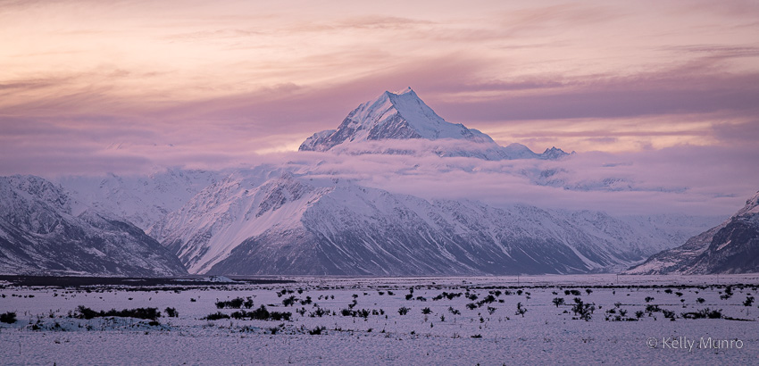
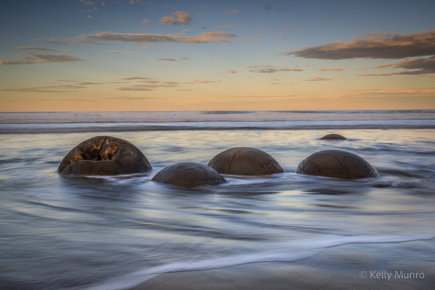
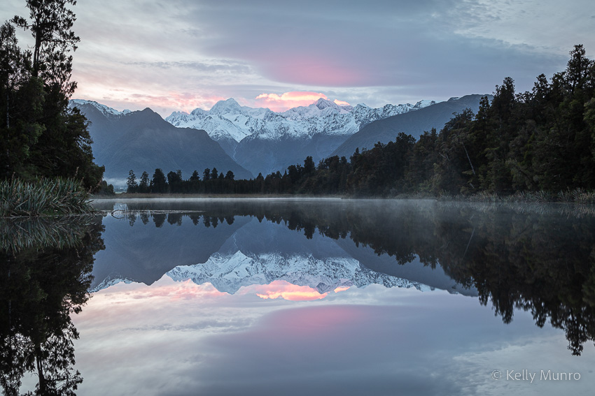
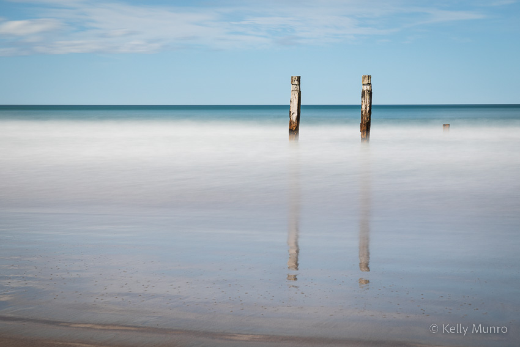
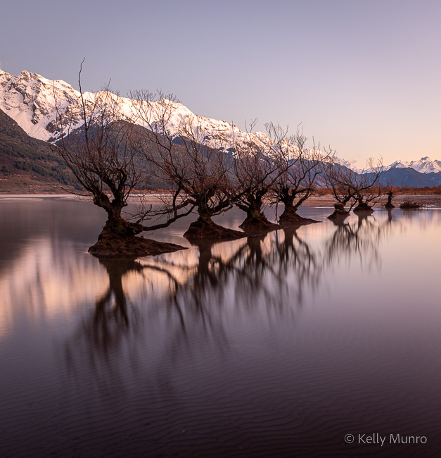
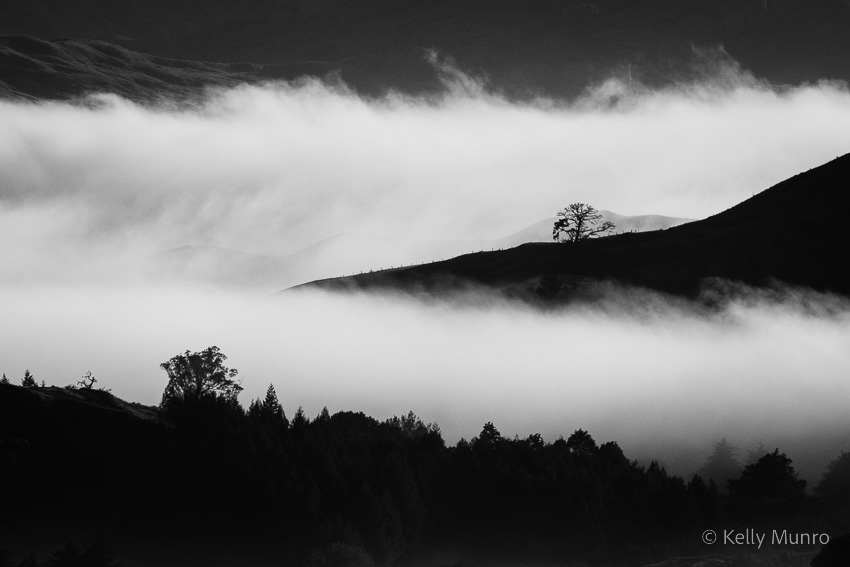
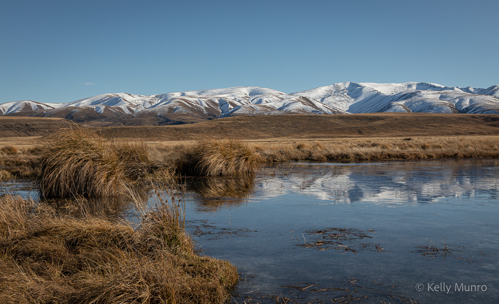
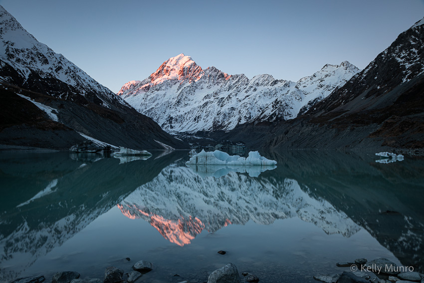

Portfolio > Landscapes

Aoraki Mount Cook
Aoraki Mount Cook at sunset

Moeraki Boulders
Moeraki Boulders at sunset

Sunrise at Lake Matheson
Mount Tasman and Mount Cook reflected in Lake Matheson at sunrise

Remnants
Remnants of an old jetty at Akitio

Maniototo Sunset
Maniototo, Central Otago

Glenorchy Trees
Trees reflected in Lake Wakatipu at sunrise

Kaiti Hill
A foggy morning at Kaiti Hill

Tarn Reflections
Snow-capped peaks reflect in a mountain tarn on Home Hills Run Road, Maniototo

Hooker Lake
Mount Cook reflected in Hooker Lake